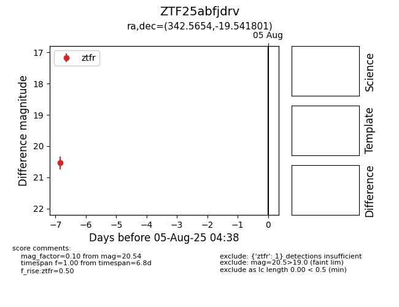

Target ZTF25abfjdrv at 2025-08-05 04:38, see:
FINK: fink-portal.org/ZTF25abfjdrv
Lasair: lasair-ztf.lsst.ac.uk/objects/ZTF25abfjdrv
ALeRCE: alerce.online/object/ZTF25abfjdrv
alt names
ZTF25abfjdrv (ztf,fink)
coordinates:
equatorial (ra, dec) = (342.5654,-19.54180)
galactic (l, b) = (41.7025,-61.24884)
photometry
last ztfr=20.54
1 ztfr detections
